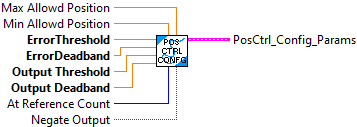

This VI creates the configuraation parameters for the position control controller. The straight line slope and intercept are calculated from the error threshold, error deadband, output threshold, and output deadband. A separate maximum output input to the controller executable allows the rate of output reduction to be constant for different maximum output values.
The optional inputs Max Allowed Position and Min Allowed Position provide a virtual limit switch capability that forces the output to zero when it would cause movement in the direction of the exceeded limit.
The optional "at refernce count" parameter specifies the number of consecutive execution cycles the absolute value of the error has to be within the deadband to set "At Reference" to true. For a 20 millisecond loop time, the default value of 13 forces the error to be within the deadband for 260 milliseconds before At Reference is set to true.
The optional Negate Output parameter causes the output value to be multiplied by negative one.
Inputs:
- Max Allowed Position - double - (Optional,, default: 9E+30 )
- Max Allowed Position - double - (Optional,, default: 9E+30 )
- Error threshold- double - When the error reaches this point, the output will start reducing from Output Threshold to Output Deadband as the error decreases. Thie value must be positive.
- Error Deadband - double - When the absolute value of the error is less than this, the output will be set to zero. Thie value must be positive.
- Output Threshold - double - This is the output value used to calculate the slope of the slow down. The actual Maximum Output is specified in the Execute VI. The actual Maximum output can be greater or smaller than this value. Thie value must be positive.
- Output Deadband - double - This is the output value when error reaches the Error Deadband. Thie value must be positive.
- At Reference count - integer - The number of consecutive cycles that the error has to be within the Error Deadband to set the At Reference output to TRUE. (Optional, default: 13 )
- Negate Output - boolean - When TRUE causes the output to be negated. (Optional, default: FALSE)
Outputs:
- PosCtrl_Config_Params - cluster - Data cluster containing the configuration parameters for the Position Control Execute VI.
This VI calculates closed loop position control output (CO), provided the Setpoint (SP), and Process Variable (PV). It incorporates a position deadband. It also incorporates output slowdown as the desired position is approached.